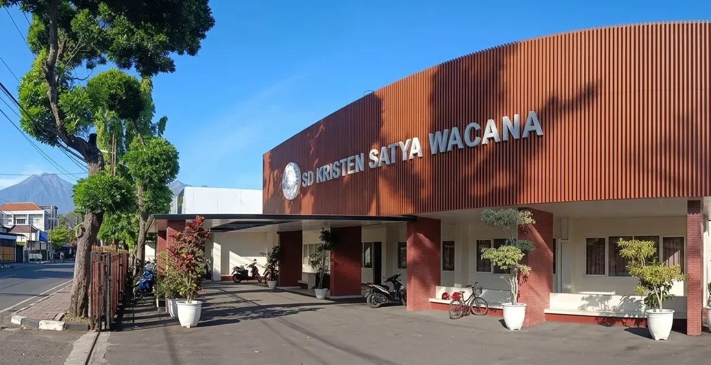

Sekolah Laboratorium UKSW
Integrasi langsung dengan lab AI/Robotika, sains, dan dosen tamu UKSW.
Tenaga pendidik profesional yang mengajar dengan kasih, keteladanan, dan penuh perhatian.
Penguatan nilai moral, budi pekerti luhur, dan rasa kepedulian sosial sejak usia dini.
Perpustakaan nyaman dan kegiatan membaca terstruktur untuk memperluas wawasan siswa.
Beragam ekstrakurikuler seni, olahraga, dan sains untuk mencetak siswa berprestasi.
Sekolah Laboratorium Kristen Satya Wacana (SD Lab UKSW) Salatiga merupakan lembaga pendidikan dasar unggul terakreditasi A yang memadukan keunggulan akademik, riset pedagogis modern, dan penanaman iman Kristiani.
Di bawah bimbingan Kepala Sekolah Bpk. Amrih Gunarto, S.Sn., M.Pd. dan 19 guru berkualifikasi S1/S2 serta Guru Penggerak, kami menghadirkan pendekatan Deep Learning dan Humanizing Education untuk memupuk potensi setiap anak dengan penuh kasih.
Kemampuan Literasi: 81.76 (Sangat Baik) • Akreditasi: A (Unggul)
Fasilitas representatif di kawasan strategis dan asri Jl. Yos Sudarso No. 1 Salatiga yang ramah anak, nyaman, dan mendukung pembelajaran aktif.

Integrasi langsung dengan lab AI/Robotika, sains, dan dosen tamu UKSW.
Pembelajaran bermakna (Meaningful, Joyful) yang memanusiakan anak.
Pertukaran wawasan budaya bersama Kwansei Gakuin University, Jepang.
Wadah bakat seni rupa, vokal, tari, olahraga futsal/basket, hingga Shorinji Kempo.
Daftarkan putra-putri Anda untuk bertumbuh bersama keluarga besar SD Kristen Satya Wacana (SD Lab UKSW) Salatiga.
Meningkatkan keimanan dan ketakwaan dalam kehidupan sehari-hari dengan teladan kasih dan penguatan karakter Profil Pelajar Pancasila.
Mendorong capaian akademik dan IPTEK melalui pembelajaran mendalam yang bermakna (Meaningful), mindful, dan menggembirakan (Joyful).
Kemitraan strategis dengan ekosistem UKSW (Lab Robotika FTI, Sains FSM, Bahasa FBS) dan mitra global Kwansei Gakuin University Jepang.
Dibimbing oleh tenaga pendidik berkualifikasi S1 & S2, bersertifikasi, serta Guru Penggerak yang mengajar dengan teladan kasih.
Memimpin visi sekolah laboratorium inovatif, holistik, dan berwawasan global.
Pelopor pembelajaran aktif berdiferensiasi dan student-centered learning.
Membimbing kesiapan bernalar kritis dan kepribadian Profil Pelajar Pancasila.
Membina kebugaran fisik, sportivitas, dan prestasi olahraga peserta didik.
Berbagai program pembiasaan positif dan ekstrakurikuler untuk mengasah bakat, sportivitas, dan kemandirian siswa.
Jadwal: Ekstrakurikuler Pilihan
Membentuk kedisiplinan diri, ketangkasan fisik, pembelaan diri yang bertanggung jawab, serta rasa percaya diri siswa.
Jadwal: Kegiatan Lapangan Terjadwal
Kunjungan edukasi profesi dan lapangan nyata bersama instansi mitra seperti Tim Damkar untuk memperkaya wawasan praktis anak.
Jadwal: Program Karakter & Kesiapsiagaan
Simulasi tanggap darurat dan pengenalan keselamatan diri agar anak memiliki kesiapsiagaan menghadapi kondisi bencana.
Jadwal: Pembiasaan Rutin
Menumbuhkan kecintaan membaca sejak dini dengan ruang perpustakaan yang hangat, ramah anak, dan koleksi buku inspiratif.
SD Kristen Satya Wacana (SD Lab UKSW) Salatiga siap menjadi mitra terbaik keluarga Anda
Pengalaman berharga para orang tua mendampingi putra-putrinya bertumbuh di SD Kristen Satya Wacana Salatiga.
Anak saya sangat antusias ke sekolah setiap hari. Guru-gurunya sangat sabar, ramah, dan nilai-nilai Kristiani benar-benar ditanamkan dengan teladan yang nyata.
Orang Tua Murid
Kelas 3Kegiatan belajarnya seimbang antara akademik dan pengembangan karakter. Banyak kegiatan praktik dan luar kelas yang membuat anak mandiri dan berani berekspresi.
Orang Tua Murid
Kelas 5Perpustakaannya nyaman, lingkungannya aman, dan fasilitas belajarnya sangat mendukung tumbuh kembang anak secara menyeluruh.
Orang Tua Murid
Kelas 2Ingin mengetahui lebih lanjut seputar pendaftaran siswa baru, kurikulum, dan kegiatan sekolah? Hubungi kami langsung.
Jl. Yos Sudarso No. 1 Salatiga 50711 Jawa Tengah
sdlab.uksw@gmail.com
081390304093 (WhatsApp Only)
Chat Langsung via WhatsAppDokumentasi semangat juang siswa-siswi SD Kristen Satya Wacana menorehkan prestasi membanggakan.
Prestasi Sains & Literasi
Pembinaan intensif untuk mencetak generasi berprestasi dalam berbagai kejuaraan akademik.
Kreatif Ekspresi Diri
Mendukung setiap talenta siswa di bidang seni suara, musik, tari, dan kreasi anak.
Olahraga & Bela Diri
Menumbuhkan jiwa pantang menyerah, kekompakan tim, dan kesehatan jasmani.
Karakter Kebangsaan
Peringatan hari besar nasional untuk menumbuhkan rasa cinta tanah air dan persaudaraan.
Dokumentasi aktivitas pembelajaran kontekstual di luar kelas, eksplorasi sains, dan penguatan karakter siswa SD Kristen Satya Wacana.
Kunjungan belajar kontekstual para siswa berinteraksi langsung dengan aneka satwa, menumbuhkan kecintaan pada keanekaragaman hayati.
Solo Safari
Mengamati langsung peninggalan purbakala dunia untuk memperkaya wawasan literasi sains, arkeologi, dan sejarah peradaban.
Sangiran
Mengenal peran petugas damkar serta praktek simulasi pemadaman api dini demi membekali keterampilan keselamatan diri.
Damkar Salatiga